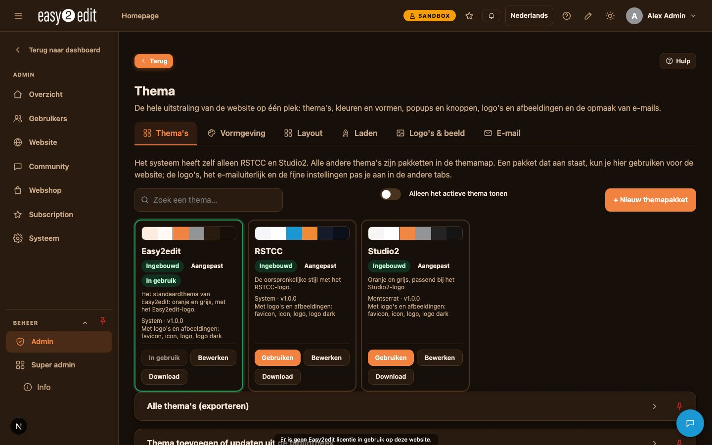
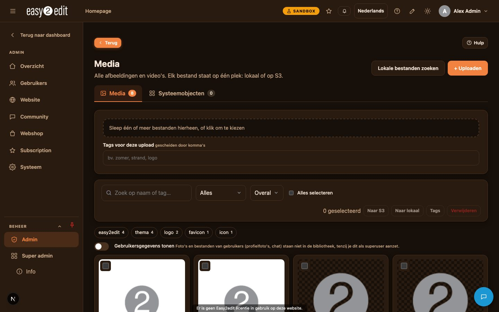
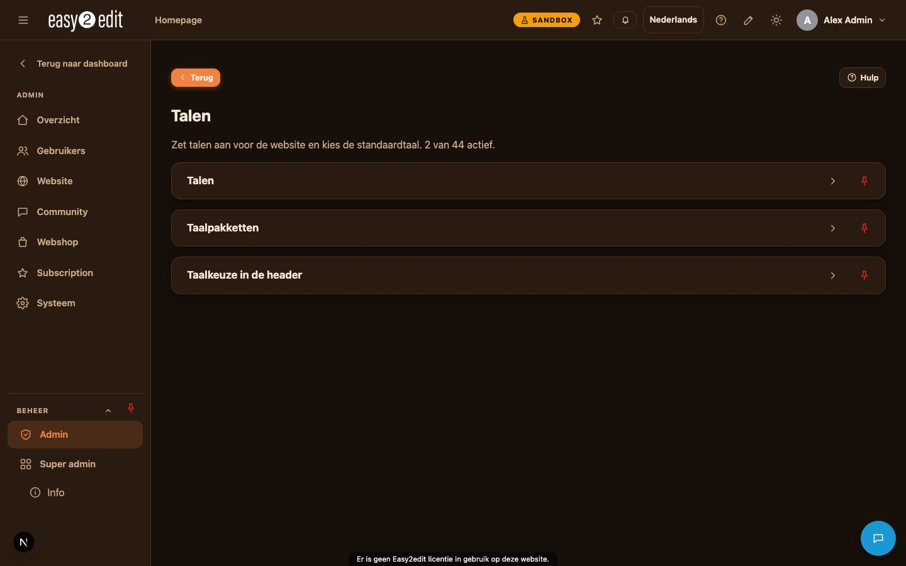

5. Media, thema, talen en branding
Video: Thema, media en talen (Nederlandse voice-over ook in English)

Mediabibliotheek#
In de mediabibliotheek (Admin > Media) beheer je alle afbeeldingen en video's die op je website worden gebruikt. Bestanden kunnen lokaal op je server of op S3 worden opgeslagen, afhankelijk van hoe je site is geconfigureerd.
Elke afbeelding of video die je uploadt kan je voorzien van tags, waardoor het makkelijker wordt om je bestanden te zoeken en organiseren naarmate je bibliotheek groeit. Eenmaal geüpload, kun je afbeeldingen vanuit de mediabibliotheek selecteren in elke pop-up binnen easy2edit, zodat je een afbeelding maar één keer hoeft te uploaden en deze daarna overal kunt hergebruiken.
Typische toepassingen van de mediabibliotheek zijn:
- Productfoto's, banners of achtergrondafbeeldingen uploaden
- Videobestanden beheren voor gebruik op pagina's
- Bestanden taggen op onderwerp, campagne of pagina zodat ze later makkelijk terug te vinden zijn
- Bestaande afbeeldingen hergebruiken in plaats van duplicaten te uploaden

Logo's & afbeeldingen#
In het onderdeel Logo's & afbeeldingen (branding) beheer je de visuele identiteit van je website. Hier kun je het volgende instellen:
- Het logo, inclusief aparte versies voor lichte en donkere modus
- De favicon, die te zien is in browsertabbladen
- Het app-icoon, gebruikt wanneer je website als app op een apparaat wordt opgeslagen
- De foto's die op de homepage worden getoond
Door deze elementen up-to-date te houden, zorg je ervoor dat je website er op alle apparaten en browsers consistent en professioneel uitziet.

Thema en vormgeving#
Het onderdeel Vormgeving (thema), te vinden bij Admin > Thema, bepaalt de algehele look-and-feel van je website. Wanneer dit is uitgeschakeld, gebruikt de website de standaardstijl. Wanneer het is ingeschakeld, krijg je toegang tot een breed scala aan ontwerpopties.
Met de thema-instellingen kun je het volgende aanpassen:
- Kleuren voor zowel lichte als donkere modus
- Lettertypen die op de hele website worden gebruikt
- Afrondingen, zoals de hoeken van knoppen en vakken
- Breedte van de inhoud, die bepaalt hoe breed het hoofdinhoudsgebied wordt getoond
- Header-indeling, inclusief een redactionele indeling met een zijmenu
- Pop-upstijl, die bepaalt hoe pop-upvensters worden weergegeven
easy2edit biedt ook themapakketten, dit zijn kant-en-klare combinaties van deze instellingen. Je kunt met één klik wisselen tussen themapakketten, waardoor je eenvoudig verschillende looks kunt uitproberen of snel een nieuwe stijl op de hele site kunt toepassen.
Als je een ontwerp hebt gemaakt dat je wilt hergebruiken, of een thema naar een andere website wilt verplaatsen, kun je je thema-instellingen exporteren. Thema's kunnen ook worden geïmporteerd, wat handig is om een opgeslagen ontwerp toe te passen of een thema tussen projecten te delen.
Stappen om een themapakket toe te passen:
- Ga naar Admin > Thema.
- Zorg ervoor dat het onderdeel Thema is ingeschakeld, want als je het uitschakelt, keert de website terug naar de standaardstijl.
- Blader door de beschikbare themapakketten.
- Selecteer degene die je wilt toepassen.
- Controleer je website om te bevestigen dat de nieuwe look zoals verwacht is toegepast.
Talen#
Het onderdeel Talen beheert de meertalige ondersteuning van je website. Wanneer deze functie is uitgeschakeld, gebruikt de website alleen de standaardtaal. Wanneer deze is ingeschakeld, kun je je website in meerdere talen aanbieden.
In dit onderdeel kun je:
- Kiezen welke talen je website aan bezoekers aanbiedt
- De standaardtaal voor de site instellen
- Teksten vertalen met de ingebouwde AI-vertaaltool
Hierdoor kun je een breder publiek bereiken zonder elke pagina handmatig in een andere taal te herschrijven.
Het is goed om te weten dat de teksten van het easy2edit-systeem zelf, zoals labels en interface-elementen, al in 44 talen beschikbaar zijn. Dit betekent dat de beheeromgeving en ingebouwde systeemteksten zich kunnen aanpassen aan veel talen, los van de inhoudvertalingen die je zelf beheert.
Stappen om meerdere talen in te schakelen:
- Ga naar Admin > Talen.
- Schakel meertalige ondersteuning in.
- Selecteer de talen die je op je website wilt aanbieden.
- Stel je gewenste standaardtaal in.
- Gebruik de AI-vertaaltool om je inhoud naar de geselecteerde talen te vertalen.
- Controleer de vertaalde teksten om te zorgen dat ze natuurlijk lezen voordat je ze publiceert.
Alles samengevat#
Media, branding, thema en taalinstellingen werken samen om te bepalen hoe je website eruitziet en aanvoelt voor bezoekers. De mediabibliotheek houdt je afbeeldingen en video's georganiseerd en klaar voor gebruik. De branding-instellingen zorgen ervoor dat je logo en iconen overal consistent zijn waar ze verschijnen. Met de thema-instellingen kun je het ontwerp verfijnen of volledig transformeren, waarbij themapakketten snelle, kant-en-klare stijlen bieden. Tot slot zorgen de taalinstellingen ervoor dat je website bezoekers kan aanspreken in hun voorkeurstaal, terwijl de systeeminterface zelf al in 44 talen gebruikt kan worden.
Door de tijd te nemen om deze onderdelen zorgvuldig in te stellen, zelfs voordat je je richt op individuele pagina's, geef je je website een sterke, professionele en toegankelijke basis.